MSL Agent design pass, before and after
Ticket #45. One visual direction, validated chart colours, shared chart components, a style/mode/density foundation and a motion audit across every screen on main. Design source for this report: the project's own tokens (orange-600, white, warm charcoal), because it shows the product.
audit.md)Screens, before and after
MacBook Air 13 (1280x800), top of each page. Annotate anything you want changed.
MSL: My territory
Warm style. Filters, map, KPIs and distributions now share one chart kit and tokens.
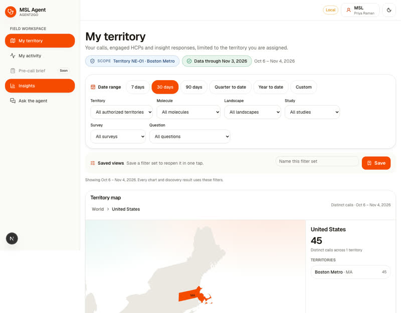
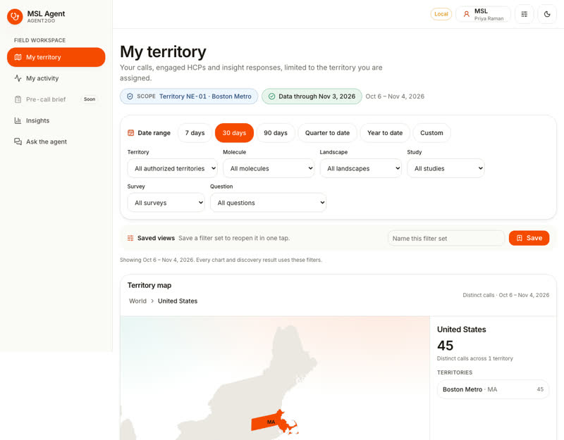
Director: My region
Clinical style: neutral active nav, flatter cards, heatmap with a legend and shared tint.
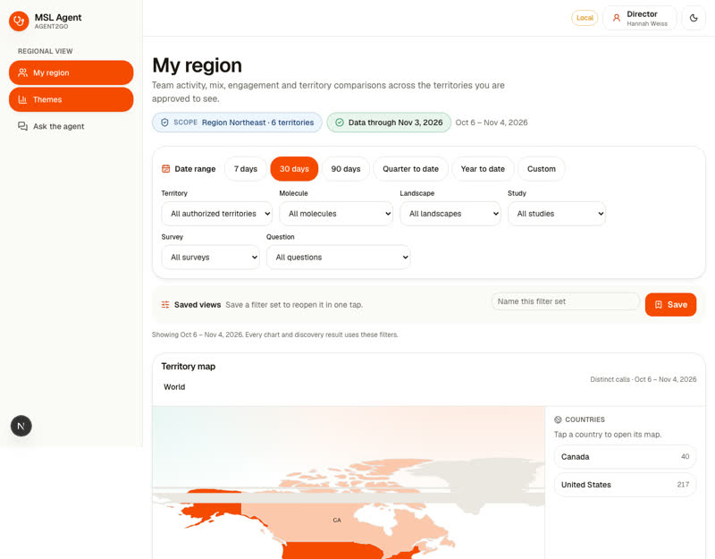

Executive: Overview
Aggregate-only view on the globe; same KPI tiles and distribution bars.
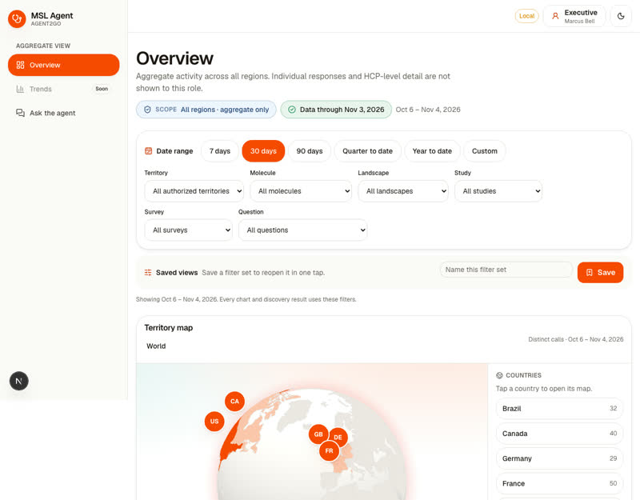
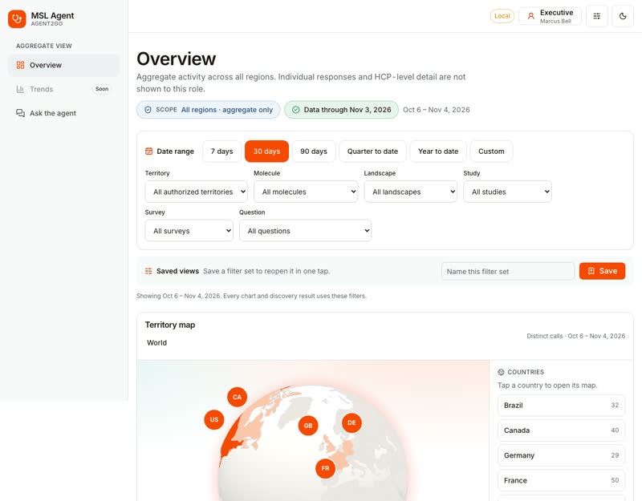
Administrator
No eyebrow label; the pipeline table fits without sideways scroll; shared timeline.
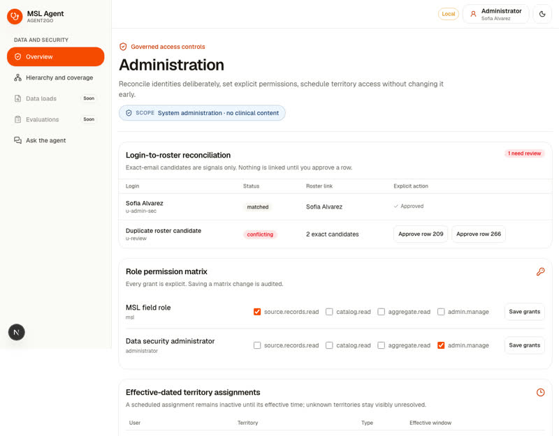
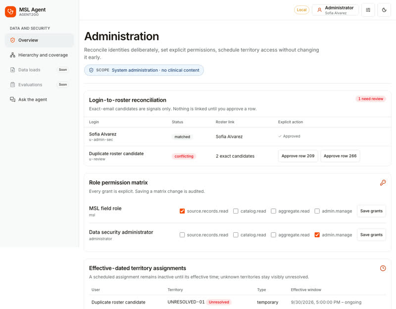
Chat
Inter with tabular figures; touch-sized input and send.
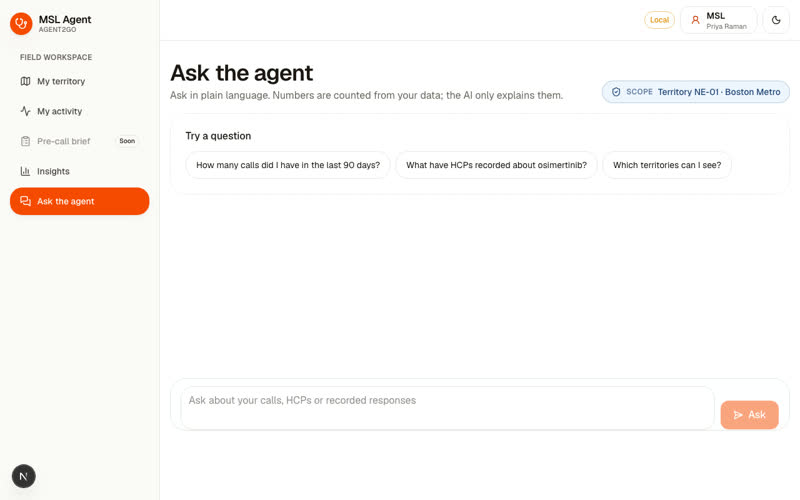

My activity
Charts use the validated palette and a 450ms draw-in.
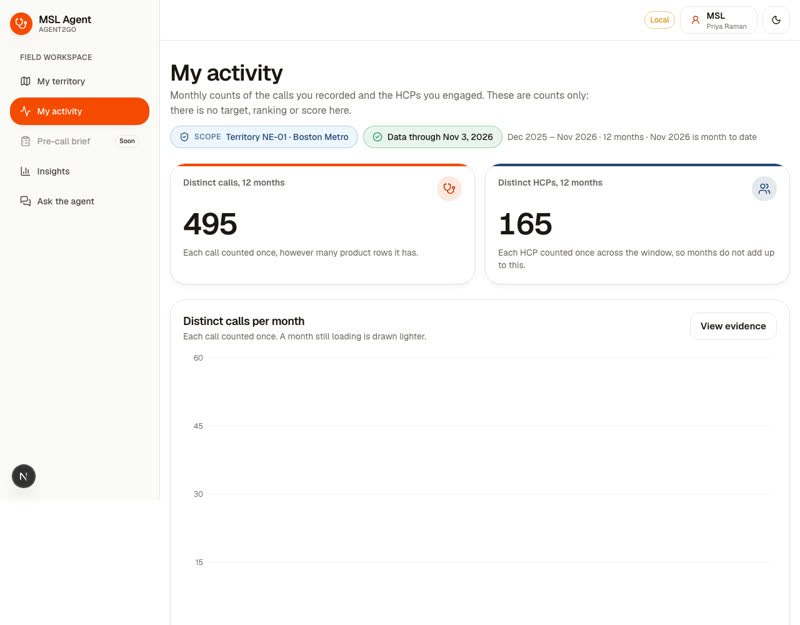

Two styles, three modes
Warm professional is the default for MSL; Clinical precise for Director, Executive and Administrator. Anyone can switch in the sliders menu in the header. Same components, different tokens.
MSL (warm by default)
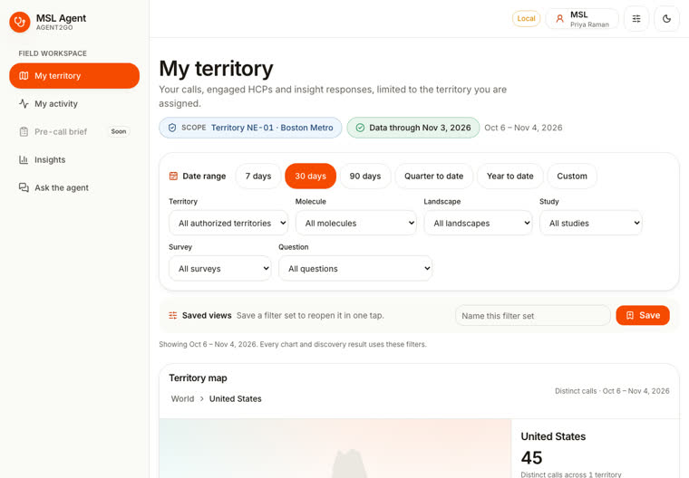
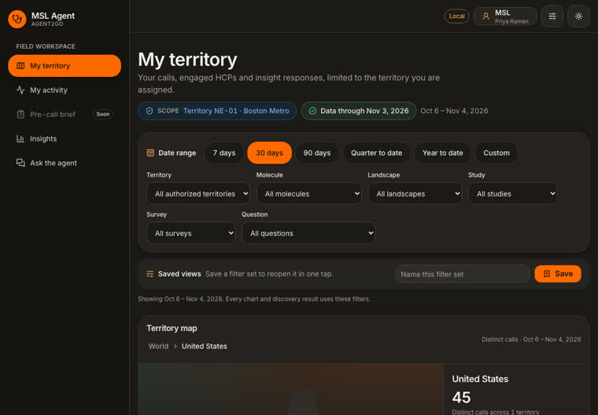
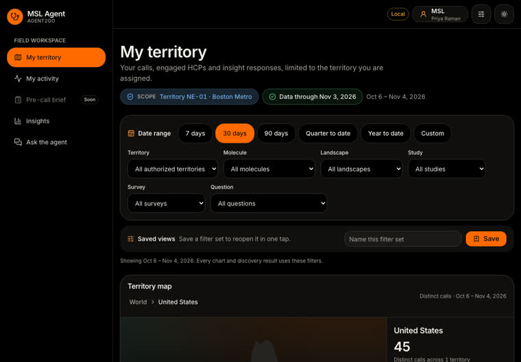
Director (clinical by default)
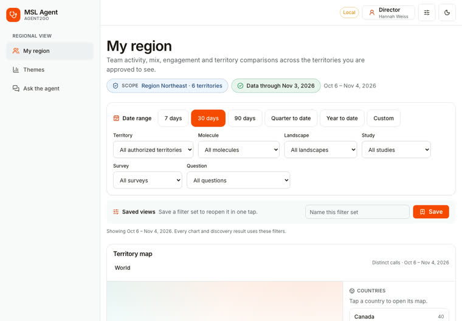
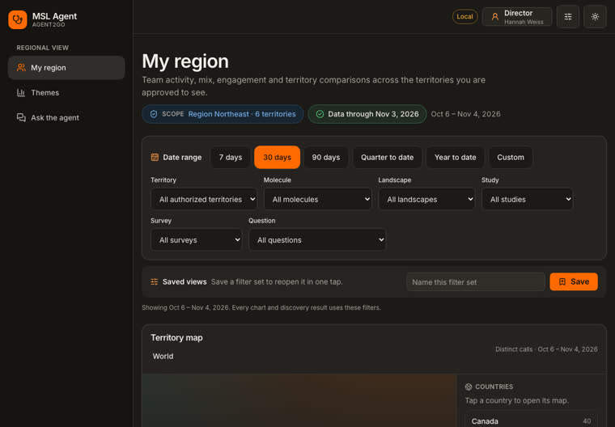
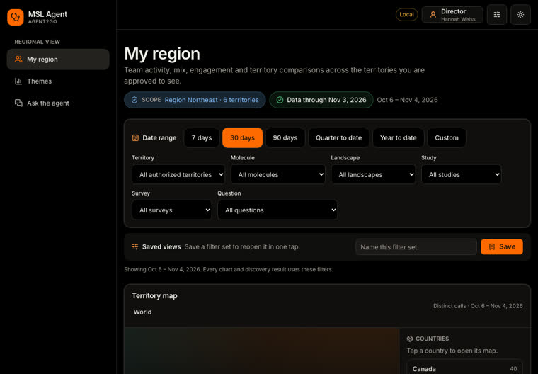
What changed
| Area | Before | After |
|---|---|---|
| Chart palette | Failed validation: light blue below the lightness band and chroma floor, a gray slot, dark slots too light, blue and teal 11.0 apart in dark | Orange, blue, aqua, violet, magenta, yellow, plus a neutral Other. Light, charcoal and black all pass; first three pass all-pairs |
| Charts | Bespoke bars, heat cells and timeline in three places; colours cycled by index | Shared KpiTile, DistributionBars, Heatmap, Timeline, Legend; colours assigned in fixed order, extras fold into Other |
| Navigation | Two items highlighted on MSL and Director (same route) | One current item; neutral chip with orange icon in the clinical style |
| Touch | 32px inputs, small selects and date fields | 44px on touch devices; compact 36px only on desktop pointers |
| Type | Geist, proportional figures | Inter, tabular figures, self-hosted with an adjusted fallback (no layout jump) |
| Motion | Sheets popped with ease-in-out, charts drew in over 1.5s, count-ups replayed on every filter, chat restarted smooth scroll per token | Drawer curve 300ms, charts 450ms, count-up once, chat follows instantly; reduced motion keeps fades |
| Toasts | None | One themed Sonner toaster for every ticket |
| Accessibility | Lighthouse 96: scope label and heat-cell contrast, heading order, brand link name | 100 on all three personas tested |
Chart palette (validated)
Fixed slot order. Never cycled. A seventh series folds into Other.
Light
#f54900 #2a78d6 #1baf7a #6250d6 #e87ba4 #eda100Worst adjacent colour-blind separation 16.3, normal vision 19.6. Slots 3, 5, 6 are under 3:1 on white, so those series always carry visible labels.
Warm charcoal and true black
#e85d1a #3987e5 #199e70 #9085e9 #d55181 #c98500All checks pass on both surfaces; worst colour-blind separation 13.2, normal vision 19.3, contrast over 3:1 everywhere.
Motion
Six places where motion helps, ranked in motion-plan.md: drawers, globe-to-map zoom, streaming chat, chart draw-in, button press, KPI count-up. Where it must not go: the command menu, table rows, filter chips, chart tooltips, globe auto-rotation. The review-animations gate approved the diff after three fixes (hover lift, bar reveal by clip, map zoom-in).
For you to decide
Warm vs clinical for Director
Director, Executive and Administrator default to clinical. If Director should feel closer to the MSL workspace, change PERSONA_STYLE.director to warm; it is one line.
Springy cards
The spring is built (.spring-in) and the detector flags it as bounce easing. You asked for it on landing and empty states, so it stays; say if you want less overshoot.
Native selects
Filter and admin selects keep browser chrome but meet the touch floor. Replace them with the styled select in the filters follow-up?
Brand mark and install icon
The app is installable but has no icon until the orange-600 mark ticket lands.